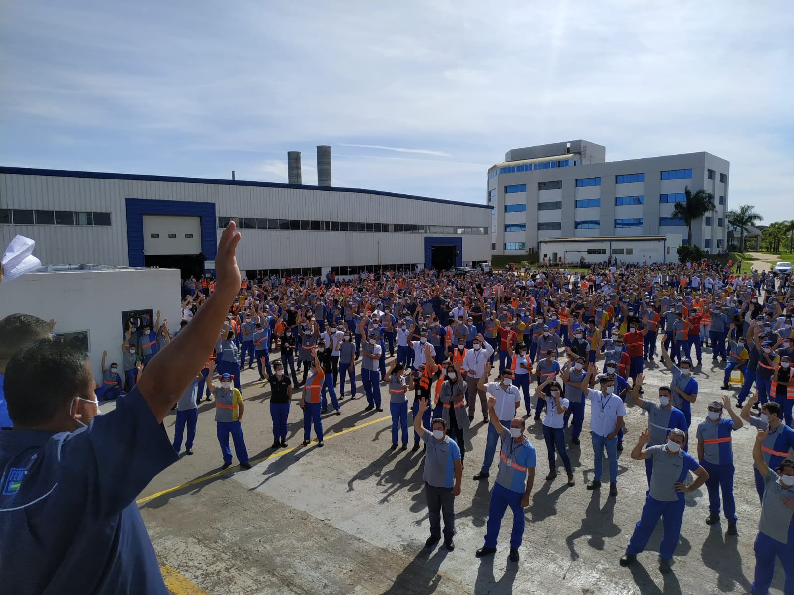
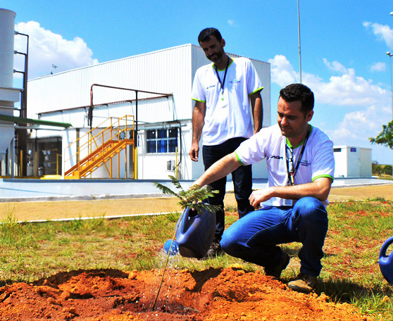
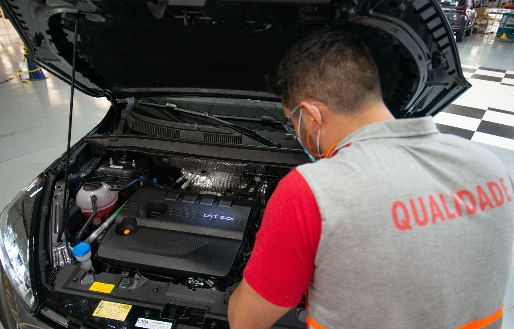
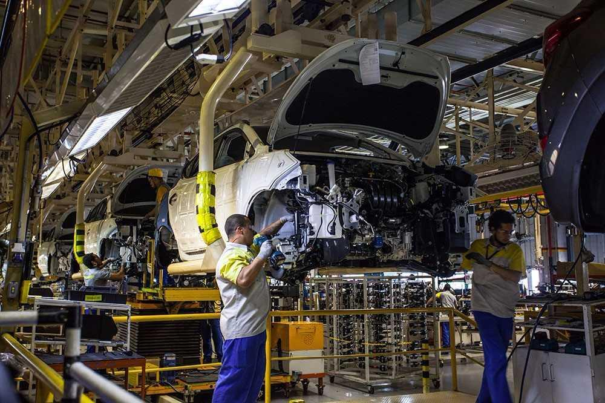

Sistemas FA
Selecione um sistema para acessar as ferramentas de gestão do setor Trim Shop

Pessoas
Controle de faltas, absenteísmo, gestão de equipes e desenvolvimento
Segurança
Acompanhamento de acidentes ACA, ASA N1 e N2, controle de segurança

Meio Ambiente
ICA (Índice de controle ambiental), gestão de impactos ambientais

Qualidade
Gestão de qualidade, controle de defeitos/avarias e melhoria contínua

Entrega
Controle de produção, Takt Time e Paradas de linha
Custos
Refugo, chamado controlado, sub componentes e evolução de refugo